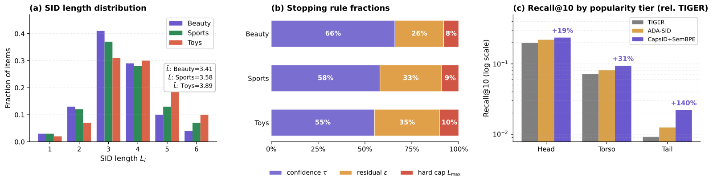
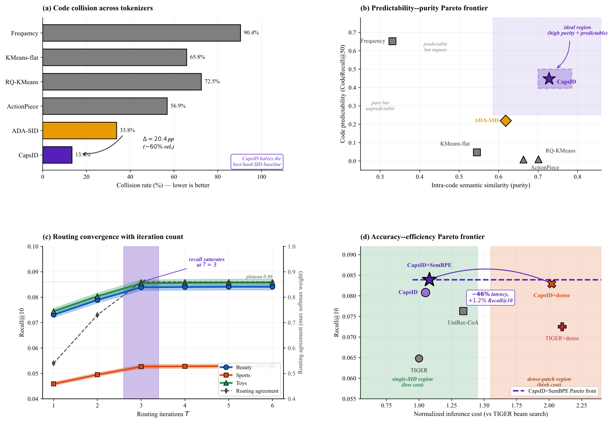
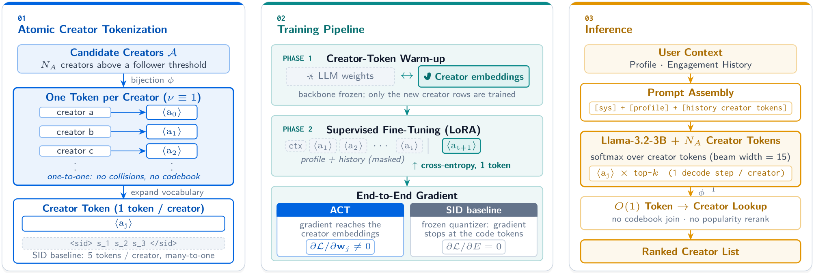
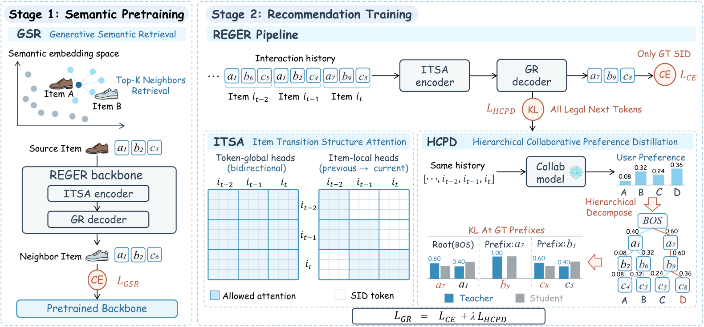
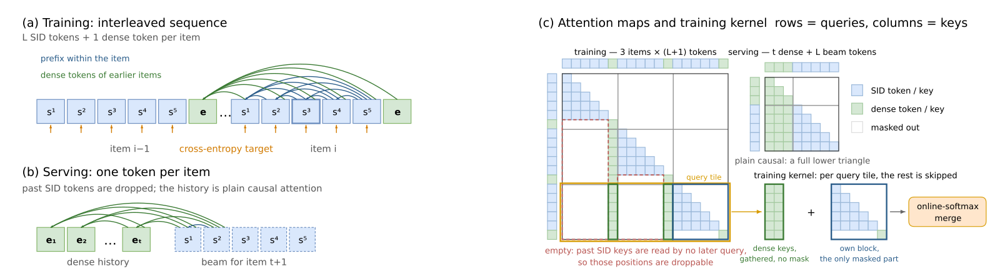

Contents · 10 sections
1What problem is it actually solving?2Pipeline overview3Capsule routing: how a layer picks its code4Soft residual: subtracting the weighted reconstruction5Variable-length IDs: when to stop6SemanticBPE: merging adjacent codes that often appear together7Experimental results8Limitations as I see them9How a generative recommendation team could try it10VerdictSHARE
Teams working on generative recommendation should read this paper, because it flips the usual patching approach: others attach a dense vector after the ID to recover lost information, while this paper reworks the step that produces the ID, so the recovered information adds almost no online retrieval cost. The core idea in one sentence: at each layer, instead of accepting only the single nearest code, an item is split across several candidate codes by weight, the residual subtracts the weighted reconstruction of those codes, and encoding stops early once a layer is confident enough, so items get IDs of different lengths. On Amazon Beauty, Recall@10 rises from 0.0770 for the strongest single-ID baseline to 0.0839, a relative gain of 8.9%; the ID collision rate falls to 13.4%; on industrial data with 35.8 million items, recall matches or slightly beats the dense-vector approach, at only 51% of its end-to-end inference latency measured on the same retrieval infrastructure.
What problem is it actually solving?
In generative recommendation, each item is first encoded as a sequence of SIDs, and the model generates the next item's SID one position at a time. SIDs are usually built with residual quantization: the first layer finds the code in the codebook closest to the item vector and subtracts it, the remaining residual goes to the second layer to find its closest code, and so on. Every layer "accepts only the single nearest one".
The paper argues this step is the bottleneck. Take an illustrative scenario: a "travel cooking kit" looks like both travel gear and cookware. The first layer can pick only one; suppose it picks "travel", then the whole "cookware" part stays in the residual, later layers have very few positions to make up for it, and if they do it badly the error keeps propagating.
Existing fixes fall into two groups:
| Route | Approach | Cost |
|---|---|---|
| Patching | Attach a dense vector after the ID, or add an attribute prefix before it | A dense vector needs an extra vector retrieval and score fusion, and on Beauty its inference latency is 2.10 times TIGER's; the attribute prefix (UniRec-CoA) is 1.34 times |
| Changing the tokenizer | Improve the ID itself so it keeps more information | Earlier methods all kept the "each layer accepts only the nearest one" step |
This paper belongs to the second group, and it changes exactly the step earlier methods left alone. The representative of the first group is COBRA (an approach that cascades a dense vector after the sparse ID), which serves as the main comparison below.
Pipeline overview
![Paper Figure 1: the overall CapsID plus SemanticBPE pipeline. Top: the item vector passes through several capsule routing layers and stops early by confidence, SemanticBPE merges semantically compatible adjacent codes, and an autoregressive model then generates the next item's ID with beam search under a prefix-tree constraint. Bottom left: soft routing, multi-round agreement and the stop decision inside one layer. Bottom right: SemanticBPE scores adjacent code pairs by frequency and semantic similarity, using a differentiable gate in training and a hard argmax at inference.](../../../figs/2026-07-31/generative/2605.05096/hf1.png)
| Step | Input | Output |
|---|---|---|
| 1. Item vector | Text, image, behavior and other features | One normalized vector (128 dimensions on public data) |
| 2. CapsID layer-by-layer encoding | The current residual | One code per layer; the residual is updated by the weighted reconstruction, stopping when a condition holds, at most 6 layers |
| 3. SemanticBPE merging | One item's code sequence | Adjacent codes that often co-occur and are semantically close are merged into a new code |
| 4. Generator | ID sequences of the user's last 50 items | The next item's ID, beam width 50, with a prefix tree filtering invalid IDs |
Steps 2 and 3 are done offline, so online only ordinary discrete IDs are visible, and existing infrastructure such as constrained decoding can be used directly.
Capsule routing: how a layer picks its code
The paper uses the word "capsule". In plain terms it is one candidate code of this layer, but instead of a fixed center point it is its own linear transform. Each layer has 256 capsules. The current residual goes through each capsule's transform, giving that capsule a "vote" vector.
Next come several rounds of agreement. In the first round all capsules have equal weight; the votes are summed by weight and passed through a squashing function, squash, giving this round's consensus. The formula is : the direction is unchanged and the length is squeezed into 0 to 1, closer to 1 the longer the input. Then each capsule takes the inner product of its vote with the consensus and adds it to its routing score (scores start at 0 and accumulate every round), and the next round applies softmax over all capsules' routing scores to get the new weights. By default there are 3 rounds, and the capsule with the largest final weight becomes this layer's code.
A hand-computed two-dimensional illustrative example: capsule A votes (1, 0), capsule B votes (0, 0.8).
| Round | Weight of A | Weight of B | Length of this round's consensus |
|---|---|---|---|
| 1 | 0.500 | 0.500 | 0.451 |
| 2 | 0.532 | 0.468 | 0.458 |
| 3 | 0.572 | 0.428 | 0.471 |
So the code is A, but B still keeps about 43% of the weight. This means agreement gradually pushes weight toward the more convincing vote without turning into "winner takes all" in one step, so the second facet's information survives, and the residual update below uses it.
The number of agreement rounds matters: with just 1 round, Recall@10 drops from 0.0839 to 0.0731, down 12.9%; 2 rounds give 0.0789; after 3 rounds it is essentially saturated, with 5 rounds at 0.0841. This shows the rounds after the first really do correct the choice rather than being decoration.
Soft residual: subtracting the weighted reconstruction
This is where the paper differs most from ordinary residual quantization. The ordinary approach subtracts only the winner's code; CapsID subtracts the sum of all capsule outputs weighted by their final weights. The "capsule output" here is not the consensus of a round above: it is each capsule's own vote passed through squash on its own, independent of which routing round it is; the weights are those of the last round. The paper's theoretical analysis also has "codebook centers", but it does not define how a capsule center arises from the capsule transform, and only assumes the capsule outputs stay close to their centers.
Again with illustrative numbers, by hand: the residual is (0.6, 0.4), where the first dimension stands for "travel" and the second for "cookware". Capsule A outputs (0.6, 0) and capsule B outputs (0, 0.5).
- Subtract only the winner A: (0, 0.4) remains, length 0.40, and the "cookware" part is left untouched for the next layer.
- Subtract with weights 0.6 and 0.4: (0.24, 0.2) remains, length about 0.31, and part of both facets has been explained.
So a boundary item does not have to choose between "travel" and "cookware", and the next layer also sees a smaller error. In the ablation, switching the soft residual back to subtracting only the winner drops Recall@10 by 16.3%. Fixing the length at 2 drops more in the table (21.6%), but that cuts length; among the variants that change the assignment, this one hurts most. The paper concludes that the gain comes from the assignment operator itself, not from codebook initialization or the form of supervision.
The subtraction does not guarantee the residual gets smaller. The paper's appendix gives the condition for the residual norm to decrease and says the condition is encouraged by the reconstruction loss and by normalizing votes; training monitors the share of updates that enlarge the residual, but none of the reported experiments enable the remedy of shrinking the step size.
A reimplementation also has to fill in one detail itself: the item vector has 128 dimensions and the capsule output has 64, yet the formula subtracts the latter directly from the former. The paper does not state what mapping aligns the 128-dimension residual with the 64-dimension capsule output before the routed reconstruction is subtracted, so you have to settle on your own.
Variable-length IDs: when to stop
Why variable length? A fixed length gives simple items and ambiguous items the same number of positions, so simple ones are over-encoded and complex ones get too few.
Each layer computes a confidence: the winning capsule's weight times the length of the consensus. Encoding stops if any of three conditions holds: confidence is at least 0.82; the remaining residual length is at most 0.08; or layer 6 has been reached.
Computing a confidence by hand: the winner's weight is 0.9 and the consensus vector has length 2 before squashing, so after squashing its length is 4 / 4.5 ≈ 0.889. The confidence is then about 0.80, below 0.82, so encoding continues to the next layer. If the length before squashing is 3, it becomes about 0.947 after squashing, the confidence is about 0.85, and encoding stops. This means that to stop on confidence, "concentrated weight" and "a strong enough consensus" must hold together; one dominant capsule with weak votes is not enough. The other route is a residual that is already small enough, which stops encoding even when confidence is low.
The actual distribution of stopping reasons (Figure 2): confidence triggers 55% to 66% of stops, the residual rule 25% to 35%, and hitting the 6-layer cap only 8% to 10%. Average length ranges from 3.41 (Beauty) to 3.89 (Toys), and the most common length is 3. This shows the length is mostly decided by the model itself, with the cap only as a fallback.

Variable length creates a decoding problem: a short ID may be a prefix of a long one. The paper handles it by adding an "end of item" token at the end of every valid path, so generation can only stop at nodes that correspond to real items. Variable length removes prefix ambiguity, not collisions. For constrained decoding, the paper does not state how the final returned item is chosen and ranked when several items share the same full ID and thus one ending path. The Beauty collision rate is still 13.4%, so this step needs your own rule.
Threshold sensitivity also shows the trade-off in this design: lowering the confidence threshold to 0.75 gives an average length of 2.8 and Recall@10 of 0.0817; raising it to 0.90 gives an average length of 4.4 and Recall@10 of 0.0821, both worse than the default's 0.0839. In the ablation, a fixed length of 2 drops 21.6% and a fixed length of 4 drops 8.8%.
SemanticBPE: merging adjacent codes that often appear together
After CapsID there is one more step, borrowed from BPE in text tokenization. Each pair of adjacent codes gets a score of times the normalized frequency of the pair, plus times the cosine similarity of the two codes' token embeddings , with . The paper does not state how the token embeddings that SemanticBPE uses to score merge candidates are produced, or how they relate to capsule outputs and codebook centers. A candidate pair must also meet two hard conditions: it appears at least 20 times in the training set, and its similarity is above a threshold that is gradually relaxed from 0.90 to 0.55 during training. The score and hard conditions pick out candidate pairs, and the actual merge decision goes to a two-layer MLP. Its input is the two codes' token embeddings, the normalized frequency and the cosine similarity concatenated, so both terms of the score are fed in as features; its output is the probability of two classes, "merge" and "don't merge". Gumbel-Softmax makes this decision differentiable during training; at inference a pair merges when the merge probability exceeds the no-merge probability, and once a pair merges, other pairs touching either code are skipped in that pass. For this merge gate, the paper does not state how the new merged code's vector and frequency are built, or whether it takes part in later rounds of merging.
Why add the semantic term? Merging by frequency alone would join prefix pairs that are very popular but semantically broad, amplifying popularity bias. In the ablation, Recall@10 is 0.0808 without SemanticBPE, 0.0817 with frequency-only BPE, and 0.0839 for the full version. So frequency-only merging adds 0.0009 over no merging, and the semantic term adds another 0.0022 (my calculation from the table): most of the merging gain comes from the semantic term. On industrial data, merging cuts average ID length from 3.8 to 3.3.
To keep the generator from chasing a constantly moving target, training has two stages. Stage one trains only the tokenizer (including the merge MLP), without the generator. It uses several tokenizer-side losses, the main one being the reconstruction loss, the squared difference between the item vector and the reconstructed vector; a length term directly penalizes average ID length. For the reconstruction loss in this training objective, the paper does not state whether the reconstruction is the soft weighted reconstruction or the hard one decoded from the discrete IDs, nor how gradients pass through argmax and early stopping. Stage two freezes the capsule centers and the merge MLP's weights and trains the generator. Only two small sets of parameters train along with the generator: capsule routing carries a set of rank-8 low-rank adaptation parameters so it can shift slightly with downstream supervision, and the merge gate gets one learnable scalar bias that raises or lowers the overall tendency to merge. Within this two-stage protocol, the paper does not state how the training targets and the discrete index are kept in sync when adaptation changes the IDs, so a reimplementation has to decide how often to regenerate them.
Experimental results
Among the baselines in the main table, TIGER (the first generative recommender to build IDs with residual quantization) is the starting point, and ReSID (a method that quantizes item representations learned in the recommendation setting itself) is what the paper treats as the strongest single-ID baseline. Recall@10, averaged over three random seeds:
| Method | Beauty | Sports | Toys |
|---|---|---|---|
| TIGER | 0.0648 | 0.0400 | 0.0712 |
| ReSID | 0.0770 | 0.0475 | 0.0786 |
| COBRA (with dense vector) | 0.0725 | 0.0434 | 0.0781 |
| CapsID | 0.0808 | 0.0507 | 0.0803 |
| CapsID + SemanticBPE | 0.0839 | 0.0527 | 0.0855 |
Relative to ReSID, the full method improves 8.9%, 11.0% and 8.8% on the three datasets, 9.6% on average. This shows that changing only the tokenizer can beat approaches that need an extra dense vector.
On the question "is a patch still needed?", the paper runs a dedicated comparison on Beauty. Cost means inference latency, with TIGER's beam search at beam width 50 as 1x:
| Configuration | Recall@10 | Inference cost |
|---|---|---|
| TIGER | 0.0648 | 1.00x |
| TIGER plus dense vector | 0.0725 | 2.10x |
| UniRec-CoA (attribute prefix) | 0.0763 | 1.34x |
| CapsID | 0.0808 | 1.05x |
| CapsID plus dense vector | 0.0829 | 2.14x |
| CapsID + SemanticBPE | 0.0839 | 1.08x |
Adding a dense vector to TIGER gains 11.9%, but adding it to CapsID gains only 2.6% while the cost doubles. This shows that the more information the ID itself keeps, the smaller the marginal value of a dense patch.
On ID quality, CapsID's collision rate on Beauty (the share of items that do not get a unique ID) is 13.4%, versus 33.8% for ADA-SID (another variable-length ID method) and 72.5% for RQ-KMeans residual quantization. Long-tail Recall@10 rises from TIGER's 0.0092 to 0.0221, while popular items improve only 19%, which shows soft assignment helps most for less popular items that sit on category boundaries. On the cold-start subset, meaning items with fewer than 5 interactions in the training split, dividing Recall@10 on this subset by full-corpus Recall@10 gives 73% for CapsID and 57% for TIGER.

Industrial data (8.6 million users, 35.8 million items, 331.1 million interactions, single run):
| Method | Recall@100 | NDCG@100 | Collision rate | Average length |
|---|---|---|---|---|
| TIGER | 0.2843 | 0.1482 | 51.4% | 4.00 |
| ReSID | 0.3105 | 0.1836 | 31.8% | 4.00 |
| COBRA (with dense vector) | 0.3275 | 0.1935 | 51.4% | 4.00 plus vector |
| CapsID | 0.3286 | 0.1943 | 22.1% | 3.8 |
| CapsID + SemanticBPE | 0.3356 | 0.1974 | 19.4% | 3.3 |
The full method's Recall@100 is 2.5% above COBRA's (my calculation from the table), at only 51% of its latency. But split by popularity, it is actually 3.2% below COBRA on popular items and 25.4% above it on the long tail. This shows the dense vector is still useful for popular items, and the tokenizer's advantage is concentrated in the long tail.
Limitations as I see them
First, a few points about the experiments' credibility deserve attention. The industrial result is a single run, and there is no online controlled experiment. The implementation notes in the appendix say "during real experiments, we will report the distribution of stopping causes" and "in the intended fair setting", which reads like a plan written before the experiments; sitting next to results already reported in the main text, it makes it hard for readers to tell which settings were really used for the reported numbers.
Second, the mechanism has gaps that will stall a reimplementation. The dimension alignment, the reconstruction loss, whether IDs change in stage two, how merged codes are represented and how colliding items are returned, all mentioned above, have to be filled in yourself. "Capsule centers" appear only in the theoretical analysis and generator initialization, while the main text defines each capsule as a set of linear transforms, so how the two correspond also has to be inferred. All of these affect whether the 13.4% collision rate can be reproduced from the paper.
Third, there are real engineering costs. Tokenizer training is 20% to 30% more expensive than residual quantization; the number of capsules per layer is fixed (256 on public data, 1024 in industry), so as the catalog grows it must be expanded or periodically rebuilt, and rebuilding IDs means retraining the generator too. It also trails the dense-vector approach by 3.2% on popular items, so in settings dominated by popular traffic the gain may be smaller than the average suggests.
How a generative recommendation team could try it
- Diagnose first: measure the collision rate of your current IDs, long-tail item recall, and hit rate on predicting the first code. If collisions are high and long-tail recall is clearly poor, the tokenizer is the bottleneck.
- Swap only the tokenizer for an offline comparison: on the same item vectors, replace residual quantization with soft assignment plus soft residual, at a fixed length of 4, to confirm the soft residual's own gain first. When you fill in the dimension alignment, record your choice.
- Then add variable length: start from the paper's thresholds (0.82, 0.08, 6 layers), check the distribution of stopping reasons and the average length, and confirm the prefix tree has the end-of-item token.
- Try SemanticBPE last, comparing it with a frequency-only merge, and focus on whether popularity bias changes.
- Look at metrics for popular items separately; if they trail your current vector-based approach, consider switching only for long-tail traffic.
Verdict
| Dimension | Assessment |
|---|---|
| Problem importance | High. Information loss in the tokenizer is a widely recognized bottleneck of generative recommendation |
| Method novelty | Medium-high. Applying capsule routing to IDs, updating the residual with a weighted reconstruction and using confidence to decide length together form a new combination |
| Evidence | Medium. Public data has three seeds and significance tests, and the ablation is complete; but industry is a single run with no online experiment, and the appendix has plan-like wording |
| Engineering cost | Medium. Online it is nearly the same as an ordinary ID approach; offline tokenizer training is 20% to 30% more expensive, and IDs must be rebuilt as the catalog changes |
| Worth trying | Worth trying the soft residual offline first, since it gives the largest gain with the most contained change; decide on variable length and SemanticBPE based on your long-tail share |
How did this read for you?
Hoot made a note. Thanks for the feedback.
One tap, no sign-in; tap again to undo. Only anonymous counts are kept, never who you are.
Related papersMore from Paper Daily

Generative · 2026-11-04Beyond Semantic IDs: Atomic Creator Tokens for Large-Scale Generative RecommendationThis Meta paper gives every creator its own token in the language model's vocabulary and uses it in place of the SID. The reason is simple: an SID is a many-to-one code, so several creators share one SID, and even when the model generates the right SID it still has to guess which of those creators the user wants. On Meta's creator recommendation data, swapping only the token layer lifts the share…
Generative · 2026-10-29REGER: Modeling inter-item Relations with Semantic IDs for Generative RecommendationCross-entropy tells a generative recommender only which token is correct, with no signal about how other candidates compare. REGER, from the University of Electronic Science and Technology of China, splits a conventional sequential model's scores over all items into branch preferences along the SID prefix tree and distills them along the true path. Added alone to TIGER, it lifts Beauty Recall@10… Generative · 2026-10-28MuSID-KD: Multigranularity Knowledge Distillation for Generative Recommendation with Semantic IDsWhen a SID-based generative recommender is distilled into a small model, the student is usually asked only to match the teacher's distribution over which item to recommend in the end. ECNU's MuSID-KD (a multi-granularity distillation method that works level by level over the SID) finds this is not enough: a student aligned only on items disagrees with the teacher on the order of candidate groups…
Generative · 2026-10-28MuSID-KD: Multigranularity Knowledge Distillation for Generative Recommendation with Semantic IDsWhen a SID-based generative recommender is distilled into a small model, the student is usually asked only to match the teacher's distribution over which item to recommend in the end. ECNU's MuSID-KD (a multi-granularity distillation method that works level by level over the SID) finds this is not enough: a student aligned only on items disagrees with the teacher on the order of candidate groups…
Generative · 2026-10-28PinGER: Token-Efficient Generative Retrieval with Semantic IDsGenerative retrieval encodes each item as a multi-level SID and generates it level by level, but on the input side every history item costs several tokens. During training, Pinterest's PinGER places one dense-vector token after each item's SID and requires that any token reading another item may see only that item's dense token, never its SID. At serving time all SIDs in the history can be droppe…
Discussion
Add experiment details, reproduction notes or a different take. Requires a GitHub sign-in.
Loading the discussion…